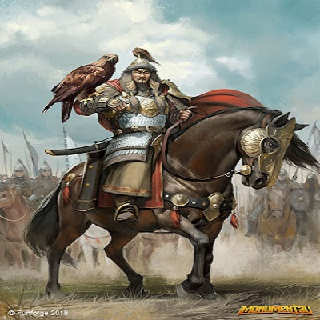

Ruler of the World Ocean
Poem
Never torture a soul so much that it breaks all levels of humbleness and turns into a devil's incarnate. Find out the harsh backgrounds, struggles and victories of the world's cruelest warrior.

The Girl Who Shared Her Umbrella
Poem
Find out this amazing event when a simple guy falls for a simple girl and weaves dreams of being together. But all these started with the sharing of an umbrella.